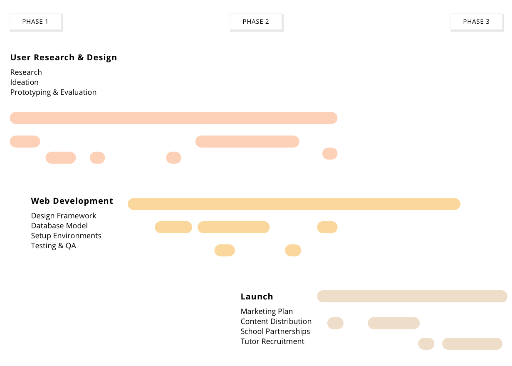

research, design
shasha
| Role | Researcher, Product Designer, Product Manager |
| Methods | Surveys, Wireframing, Mockups, Remote Usability Testing |
| Tools | Google Analytics, Sketch, Silverback |
| Duration | Spring 2017 - Present |
A Learning Platform For High School Students In Zimbabwe
- Study alongside subject matter experts and students.
- Access to detailed study guides all year round.
- Practice material with expert-made quizzes and tests.
The Challenge
There are 278 High Schools that are accessible (areas that have Internet connectivity and access to devices) in Zimbabwe. 80% of these schools do not provide secondary sources of learning for students and there is a need for access to supplementary educational materials and support. While there are existing platforms that provide these materials for a few schools, for Shasha to participate in and lead the market, the UX of its brand and website needed to be redesigned. The platform had over 100+ users, yet many of them did not enjoy their experience on the website enough to return.
How can we build an online experience that will engage and attract users so that Shasha can penetrate its target market while addressing user needs?
Process
Research
Surveys + Google Analytics
In order to validate our assumptions and understand the current experiences and needs of the active users on the website, we developed an online survey and asked users questions about their weekly engagement and favorite features. Using Google Analytics, we analyzed traffic, bounce rate, and drop off rates.
What we found
High Bounce Rate 70% of all registered students visit the website the website at least once a month but their average session lasts for less 3 minutes.
Low User Satisfaction Users were unhappy with the accessibility, and quality of the content provided on the website. They were also unhappy with the structure and felt that the platform could be more engaging.
Cultural Education Differences In Zimbabwe, the high school curriculum is based on a British standardized system and students are seperated into A or O level status. These levels are qualifications received after completing exams that measure advancement through high school. Courses taken in school are seperated based on their levels.
Strategy
Engaging & Culturally Responsive Content Our research findings informed us that users were expecting more from the content each time they visited. Specifically, they needed the content to match their status as A or O level, wanted to see new/updated content from credible sources, and have access to 'exclusive' content such as study guides for tests.
Accessible On Lower-End Mobile Phone Using insight from experts in the domain (natives of Zimbabwe in the education), we found that most students would be using the platform from their lower-end smartphones. Given this consideration, we prioritized the simplicity and accessibility in the ideation phase design.
Ideation
Wireframes
{kind=link}
{kind=link}
{kind=link}
{kind=link}
Mockups
In the final mockups, we narrowed in on the design of three core pages based on the UX goals that came from the research: engaging/culturally responsive content, accessibile on low-end mobile phone. These pages are outlined below.
Library The library needed to contain content that was aligned with the A or O level classes students were currently taking in high schools across the country. This page was designed to highlight these levels and provide an intuitive way to navigate between the courses provided under them.
Course Page This design addressed the need for a low-end mobile friendly page with very little content that would need downloading. This design is intentionally text heavy and simple to navigate.
Assessments This design of the assessments focused on ensuring that users were able to engage with the content by practicing learned concepts, seeing their progress, and easily viewing their results.
Evaluation
Moderated Remote Usability Test
In order to validate our designs and gather feedback from real people within our user group, we conducted remote user studies with 3 students in Zimbabwe. We used a mix of Google Hangouts and Youtube Live to screenshare + record the audio and video of participants as they performed tasks on the prototype.
Metrics
During the moderated tests, we used the following metrics to measure success: satisfaction, task performance, level of engagement, and ease of use
Findings
Users had an overall positive experience using the new design, however there were a few issues with the ease of use of the platform. Using this feedback, we implemented changes into a second iteration of the mockup designs.
- We found that users had issues navigating through the course page and the quizzes.
- We also found that users not only wanted engaging content, but also wanted to engage with experts/tutors on the site.
Launch
Using agile frameworks and methodology, I led the team through the creation of user stories based on the feedback, and a development plan for the implementation of the new design.
